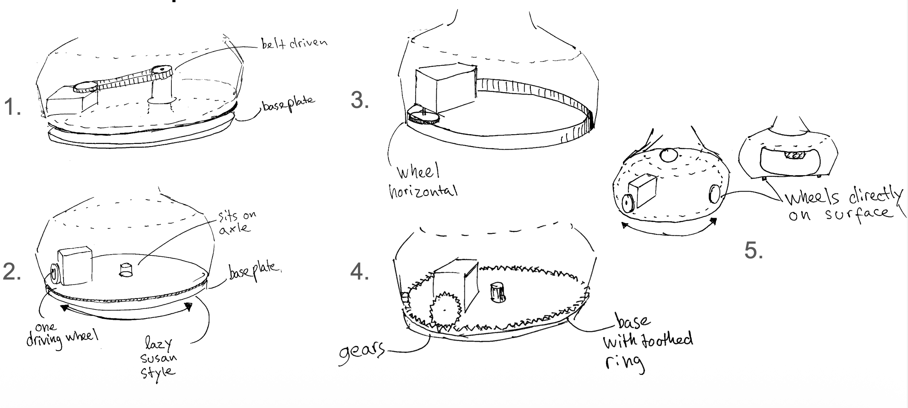
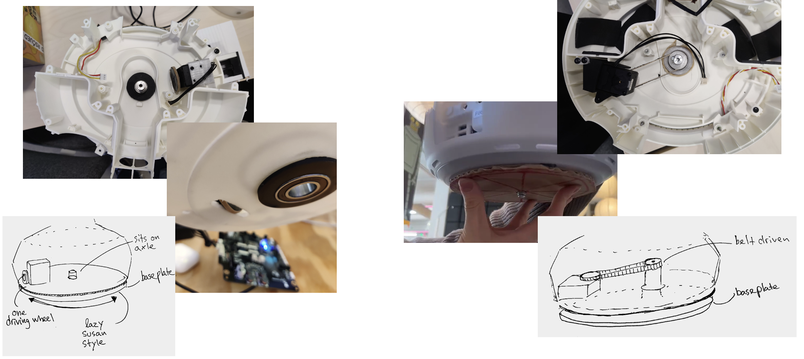
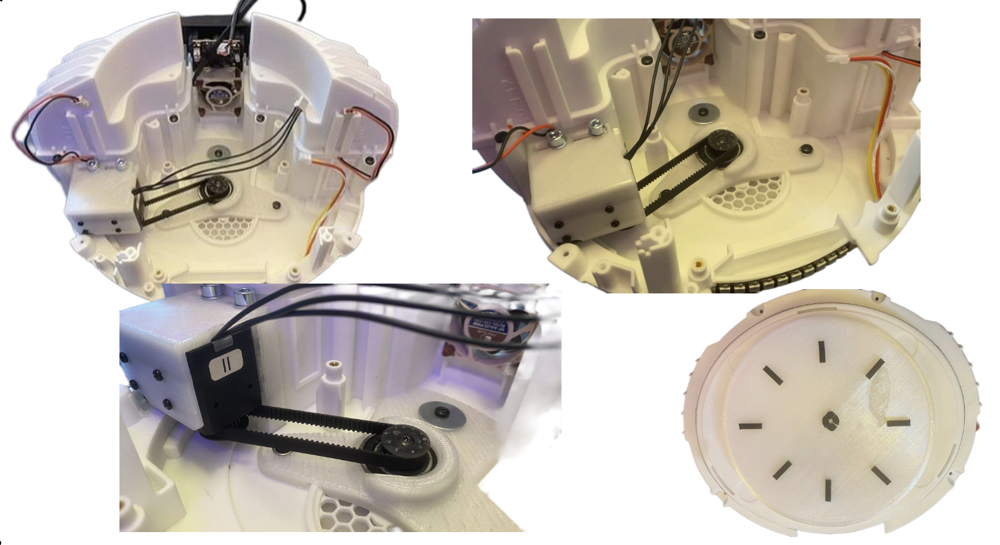
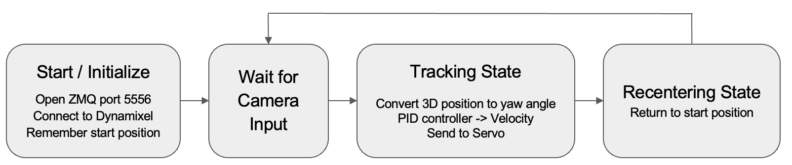
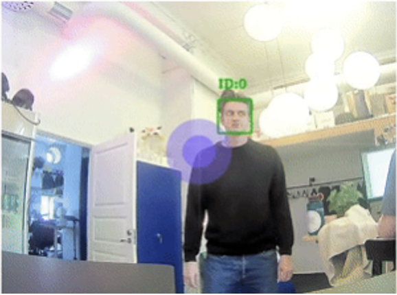
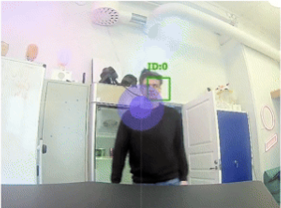
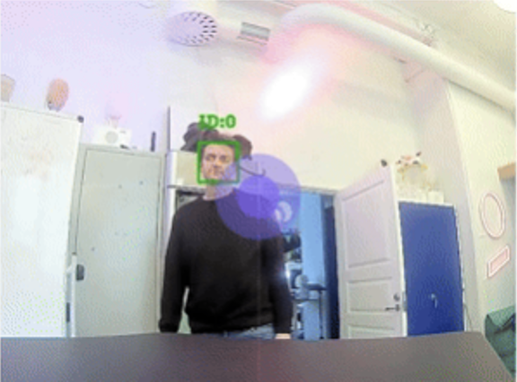

Furhat Robotics · Prototyping & Concepting · 2025
360° Furhat
Adding full-body rotational freedom to a social robot.
As part of Furhat Robotics’ Prototyping & Concepting team, I worked on a prototype that added an additional rotational degree of freedom to the Furhat robot. The goal was to allow the complete robot to turn toward people around it, extending Furhat’s existing head and facial movements into full 360° interactions.
01 / Concept development
Exploring how the whole robot could turn.
Several mechanical architectures were explored, including friction-wheel, geared and belt-driven solutions. The concepts were evaluated around integration into the existing Furhat structure, packaging, reliability and the ability to rotate the complete upper assembly.

02 / Early prototyping
Testing the principle inside the housing.
Promising concepts were quickly prototyped and tested in the robot. These experiments helped expose practical constraints such as available space, structural support, bearing placement and how the drive system could be integrated without redesigning the complete platform.

03 / Final mechanical concept
A compact belt-driven mechanism.
The final prototype used a belt-driven mechanism centered around the robot’s rotational axis. A dedicated servo drives the central pulley through a timing belt, while a bearing and custom structural components support the rotating assembly. The mechanism was designed around the existing Furhat housing to minimize modifications to the original platform.


04 / Built prototype
From CAD to a working mechanism.
The design was manufactured and assembled into a working prototype. The added actuator and transmission fit within the robot base while preserving the existing neck mechanism and electronics, turning the mechanical concept into a functional fourth degree of freedom.

05 / Tracking and control
Turning perception into body motion.
The mechanical system was connected to a person-tracking control loop. After initialization, the software receives camera input, converts the detected 3D position of a person into a yaw angle and uses a PID controller to command the rotation servo. When tracking ends, the robot can return to its original orientation.

06 / Working demonstration
Following people around the robot.
In the final demonstrator, Furhat could follow a person moving around its field of view with the complete body, rather than relying only on eye and head movement. This made the robot’s attention more physically expressive and demonstrated how an additional body axis could extend interaction beyond Furhat’s original forward-facing workspace.



Outcome
The prototype demonstrated that full-body rotation could be integrated into the existing Furhat platform using a compact mechanical drive and a lightweight tracking controller. It also revealed the next engineering challenges for a production-ready implementation, including cable routing, base stability, airflow, service access and smoother motion trajectories.